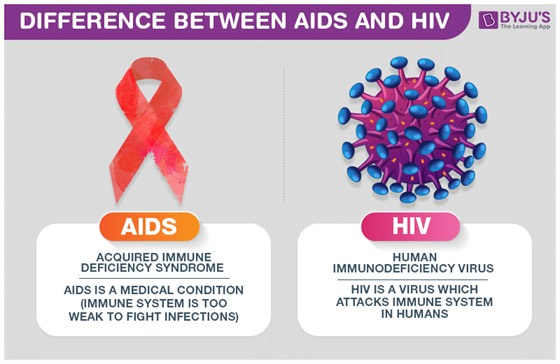
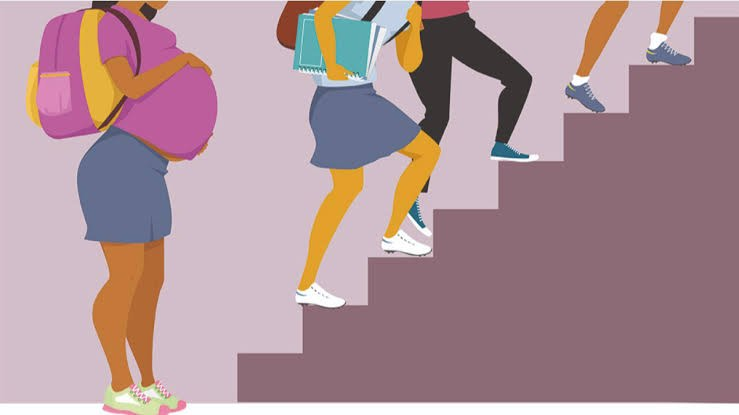

Welcome curious minds!
> Sexual education is mainly intended to educate and raise awareness about different issues in todays society.A majority of young people will one day, have to make decisions about their sexual and reproductive health.But, many adolescents lack knowledge required to make those decisions responsibly.For this reason, Sexual Education's purpose wil help younger people gain knowledge and skills they need in order to: Understand their body, gender identity, sexuality,and sexual and reproductive health.
> Sexual reproduction is one of the main reason for this, it is a natural way of producing the young ones, where two parents are invloved and fusion of male and female gametes takes place in this mode of reproduction.
>Through sexual intercourse,there are possible health risks due to sexually transmmitted viruses, and these viruses can lead to death. For example,HIV (Human Immunodeficiency Virus) or STI (Sexually Transmmitted Infectons), it attacks the body's immune system. If HIV is not treated, it can lead to AIDS(Acquired Immunodificiency Syndrom).
 ,->For individuals who doesn't have a family plan or are not planning on having babies, without proper sexual education may lead to unwanted pregnancies. For minors, it may affect their academics, financials and their future in general.
Making choices about your body includes deciding whether or not you want to have sex. While many people focus on not getting pregnant, you also should consider the danger of catching sexually transmitted diseases/infections. STD/I can be passed to you by having close body contact with an infected person, and through passing of bodily fluids such as semen, vaginal fluid, and breast milk. The best choice to prevent both pregnancy and diseases is to not have sex. Nonetheless, there are many ways to prevent such situations, including :
->Using safe barriers like Condoms, they are the only type of birth control that helps prevent pregnancy and STDs at the same time.
->Birth control pills, are a kind of medicine with hormones. Birth control pills come in a pack, and you take 1 pill every day. The pill is safe, affordable, and effective if you always take your pill on time. Besides preventing pregnancy, the pill has lots of other health benefits, too.